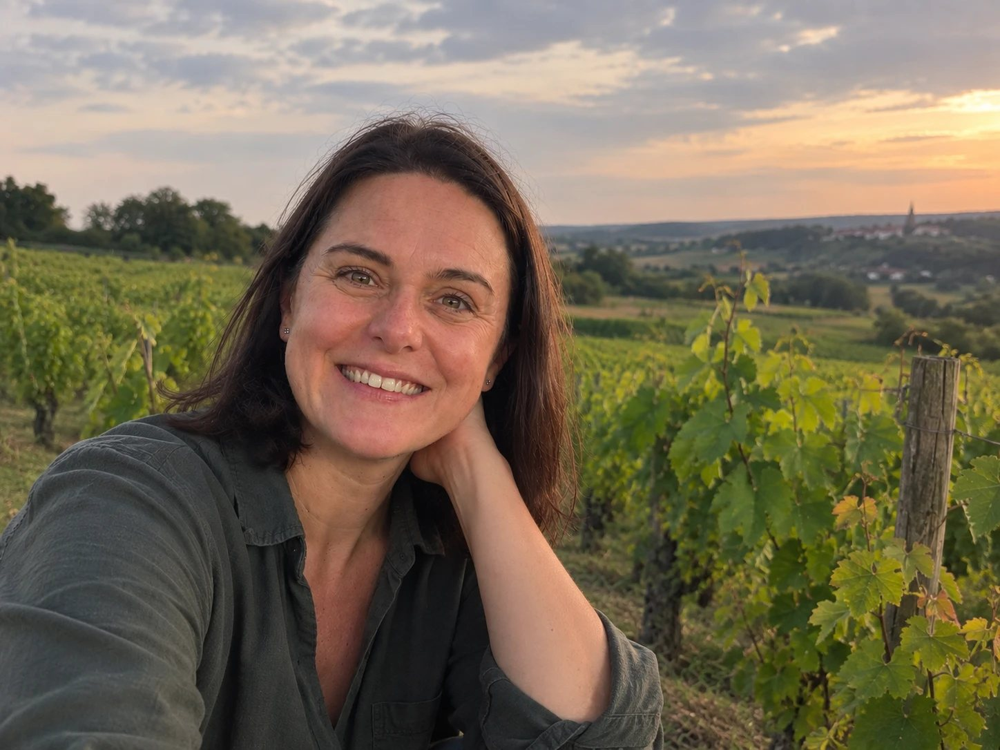

Karine Le Gendre
Oudon, Loire-Atlantique.
Plus de 20 ans d'expérience dans le tourisme ligérien. Diplômée en gestion hôtelière et touristique à l'ESTHUA – INNTO Angers, certifiée en yield et revenue management à l'ESSCA. 7 ans à la direction générale de la SPL Ôsez Mauges Tourisme, après la direction des offices de tourisme Une autre Loire et Champtoceaux. Aujourd'hui revenue manager en locations saisonnières.
Parce que je voyais tout ce que l'hébergement pouvait apporter à un domaine.
Pendant plus de 20 ans dans le développement touristique entre Angers et Nantes, j'ai eu l'occasion de rencontrer de nombreux vignerons et de voir le potentiel de leurs domaines pour accueillir des visiteurs autrement.
Un domaine viticole est un lieu qui se prête naturellement à l'immersion : découvrir un métier, comprendre un terroir, rencontrer celles et ceux qui le font vivre, prendre le temps de déguster, de se promener, de découvrir les alentours… et surtout, ne pas repartir après quelques heures.
C'est ce que recherchent aujourd'hui les voyageurs : dormir au cœur d'un environnement préservé, découvrir un lieu de l'intérieur, rencontrer ceux qui y travaillent et prendre le temps de vivre le territoire plutôt que de simplement le traverser.
C'est de cette rencontre entre 2 potentiels, celui des domaines et celui des voyageurs qu'est né mon projet entrepreneurial.
L'idée est simple : prendre en charge toute la partie hébergement pour permettre au vigneron de proposer cette expérience sans avoir à ajouter un nouveau métier à son quotidien.
Faire vivre et développer le potentiel de l'hébergement : la mise en marché, la stratégie commerciale, la visibilité, l'expérience voyageurs, le fonctionnement au quotidien et la performance économique.
L'aménagement, les travaux, la décoration ou encore la conception du lieu font appel à d'autres savoir-faire et à d'autres professionnels. Ils contribuent à la qualité du produit, tout comme la manière dont celui-ci est ensuite commercialisé, exploité et valorisé.
Je vis à Oudon depuis 2005 et j'ai passé plus de 20 ans à développer le tourisme entre Angers et Nantes.
J'ai un attachement particulier à ce territoire, à ses paysages, à la Loire, au vignoble et à ceux qui travaillent la terre.
Le vignoble m'intéresse particulièrement pour ce qu'il raconte d'un territoire : les cépages, la géologie, les sols, le travail de la vigne façonnent les paysages et donnent au vin une identité singulière. J'aime comprendre ces liens en écoutant les vignerons raconter leur histoire.
C'est cette découverte du territoire, de ses paysages, de sa nature et de ceux qui le font vivre que j'ai envie de partager avec les visiteurs.
La simplicité
J'aime les choses simples, lorsqu'elles sont bien pensées.
Un hébergement confortable sans superflu, des prestations fiables, une relation directe et sincère : c'est cette simplicité que je souhaite retrouver dans chaque projet, du lieu jusqu'à l'expérience vécue par les voyageurs.
Parlons de votre projet
Un échange, une visite, une estimation. Sans engagement, et sans frais.